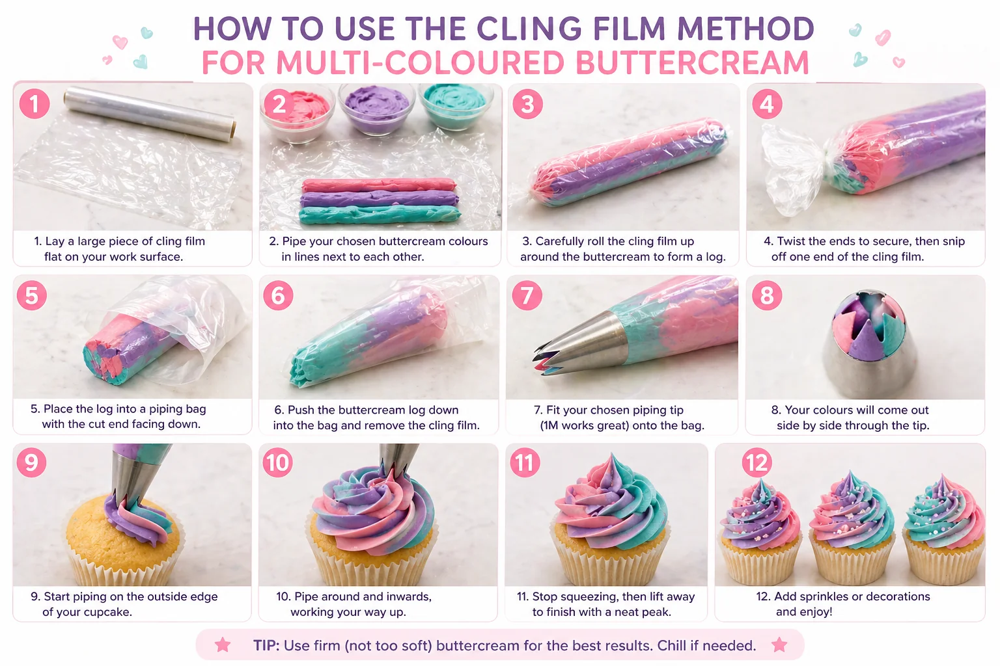

Multi-coloured buttercream swirls are one of the easiest ways to make cupcakes look party-ready. They work beautifully for birthdays, baby showers, mermaid parties, Easter, Christmas, 4th of July cupcakes and any dessert table where you want the cupcakes to match the balloon colours.
At Little Moment Studio, our focus is balloon styling and celebration setups. We do not make cakes or cupcakes ourselves, but cupcakes are often part of a beautifully coordinated party table. This guide is designed to help you understand how multi-coloured buttercream swirls are created, so your cupcakes can complement your balloon display, backdrop and party colour palette.
If you would like cupcakes or a cake to match your balloon display, we are happy to recommend a trusted local cake maker.
What Is the Cling Film Method?
The cling film method is a simple way to pipe two or three colours of buttercream through one piping bag.
Instead of putting each colour straight into the piping bag, you pipe or spread the colours onto a sheet of cling film, roll them into a log, then place that log inside your piping bag. As you pipe, the colours come out together and create a striped or swirled effect.
It is especially useful for:
- Red, white and blue cupcakes
- Rainbow and birthday cupcakes
- Pastel baby shower cupcakes
- Mermaid cupcakes
- Unicorn cupcakes
- Christmas cupcakes
- Easter cupcakes
Why Use the Cling Film Method?
The cling film method is popular because it is low-cost and beginner-friendly. You do not need a special coupler or extra equipment — only cling film, buttercream, food colouring, a piping bag and a piping tip.
It also makes the piping bag easier to clean because most of the buttercream stays wrapped inside the cling film log rather than coating the inside of the bag.
What You Will Need
| Item | Purpose |
|---|---|
| Cupcakes | Cooled and ready to decorate |
| Buttercream | Firm enough to hold a swirl |
| Gel food colours | Strong colour without softening the buttercream |
| Cling film | Holds the coloured buttercream together |
| Piping bag | Holds the buttercream log |
| Wilton 1M tip | Best for tall multi-colour swirls |
| Scissors | To snip the end of the cling film |
| Sprinkles or toppers | Optional decoration |
For most beginner designs, a Wilton 1M open star tip is the best choice — it creates a tall swirl with defined ridges that shows the colour stripes clearly.
Best Buttercream Colours to Use
Choose colours that match your party theme or balloon display. Two or three colours work best — more than three can become messy, especially for beginners.
| Party Theme | Buttercream Colours |
|---|---|
| Baby shower | Ivory, sage, blush, baby blue |
| Birthday party | Pink, lilac, mint, yellow |
| Mermaid party | Teal, purple, pink |
| 4th of July | Red, white, blue |
| Christmas | Green, white, red |
| Easter | Yellow, pink, mint, lilac |
| Halloween | Orange, purple, black or ivory |
Step-by-Step: How to Use the Cling Film Method

Prepare the Buttercream
Make a firm vanilla buttercream. It should be soft enough to pipe but firm enough to hold its shape. If the buttercream is too soft, chill it for 10–15 minutes before using.
Divide and Colour the Buttercream
Divide the buttercream into separate bowls. Add gel food colouring to each bowl. Gel colour is better than liquid colour because it gives a stronger shade without making the buttercream too loose.
For a three-colour swirl, use three bowls. Example: pink, lilac and teal.
Lay Out the Cling Film
Tear off a large piece of cling film and lay it flat on your work surface. Make sure you have enough room to roll the buttercream into a log.
Add the Buttercream Colours
Pipe or spoon each colour of buttercream in a long line on the cling film. Place the colours side by side and try to keep the lines roughly the same thickness so each colour appears evenly when you pipe.
Roll the Buttercream into a Log
Use the cling film to roll the buttercream into a sausage-shaped log. Twist both ends to secure it. The colours should now be wrapped together inside the cling film.
Snip One End
Use scissors to snip one twisted end of the cling film. This is the end that will go down into the piping bag.
Place the Log into the Piping Bag
Fit your piping bag with a Wilton 1M open star tip. Place the buttercream log inside the bag with the cut end facing down towards the tip. Push the log gently so the buttercream reaches the nozzle.
Pipe a Test Swirl
Before piping onto your cupcakes, test the buttercream on a plate or piece of parchment paper. The first squeeze may show only one colour or a slightly uneven mix. After a few seconds, the colours should begin to come through together.
Pipe the Cupcake Swirl
Hold the piping bag upright over the cupcake. Start at the outside edge. Pipe around the cupcake in a circle, then continue inwards and upwards. Finish with a small peak in the centre.
Add Decorations
Add sprinkles, pearls, fondant toppers or edible glitter while the buttercream is still soft. Choose decorations that match your colour palette.
Best Piping Tip for Multi-Coloured Buttercream
For most cupcakes, the Wilton 1M open star tip is the best choice. Other tips that work well include:
| Tip | Result |
|---|---|
| Wilton 1M | Tall swirl with clear ridges — best for showing colour stripes |
| Wilton 2D | Softer closed-star rosette style |
| Wilton 1A | Smooth rounded swirl or dome |
| Wilton 4B | Chunkier, bolder star swirl |
| Wilton 2C | Large open star effect |
For more detail on choosing between piping tips, see our guide to 10 essential piping tips for cupcakes.
Alternative: Use a Three-Colour Coupler
The cling film method is the easiest low-cost option, but a three-colour coupler is a useful upgrade if you plan to make multi-colour cupcakes regularly.
A three-colour coupler connects separate piping bags of coloured buttercream so the colours pipe through one nozzle together. The Wilton Color Swirl Three Color Coupler is the most widely available option in the UK — it is sold as a coupler-only product (nozzles not included) and is compatible with decorating tips 1M, 1A, 2C and 4B. Wilton also sells a Color Swirl decorating set that bundles the coupler with tips 1M and 1A plus disposable bags.
| Method | Best For | Pros | Cons |
|---|---|---|---|
| Cling film method | Beginners and occasional use | Cheap, simple, works with most large tips | Can be slightly messy; colours may blend unevenly |
| Three-colour coupler | Repeated multi-colour piping | Cleaner colour control; colours stay separate; easy to reload | Extra tool to buy; compatible tips vary |
| Directly filling one bag | Quick two-colour effects | Fast and simple | Messier; harder to control colour placement |
Which to choose
For most beginners, start with the cling film method. If you love the result and plan to do it regularly, consider a three-colour coupler as a next step.
Matching Buttercream Colours to Balloons
For party styling, choose buttercream colours from the balloon display. The cupcakes do not need to match exactly — they just need to repeat the same colour family so the dessert table feels connected.
| Balloon Colours | Buttercream Colours |
|---|---|
| Sage, ivory and gold | Sage and ivory with gold sprinkles |
| Blush, white and champagne | Blush and ivory with pearl details |
| Teal, lilac and pink | Mermaid-style teal, purple and pink swirl |
| Red, white and blue | Patriotic multi-colour swirl |
| Green, white and gold | Christmas festive swirl |
| Pastel rainbow | Multi-colour birthday swirl |
For more on how to coordinate cupcakes with a balloon display, see our guide to matching cupcakes with your balloon display.
Troubleshooting the Cling Film Method
Buttercream is too soft
The colours can blur and the swirl may collapse. Chill the buttercream briefly before piping and work in a cool kitchen.
Too much buttercream in the cling film
If the log is too thick it may be hard to fit into the piping bag. Start with a smaller amount until you get used to the method.
Colours are mixing together too much
Place the colours side by side on the cling film rather than overlapping them. The aim is to keep the colours separate inside the log so they stay defined as they pipe.
Cling film is blocking the nozzle
Make sure the cut end of the cling film is open and facing down towards the piping tip. If buttercream is not coming through, remove the log and check the cling film is not covering the opening.
First swirl looks uneven
The first squeeze often shows only one colour. Always pipe a test swirl onto parchment paper before decorating the cupcakes. After a few presses the colours will come through evenly.
Beginner Tips for Better Results
- Use firm buttercream — it makes the most difference to the final result
- Use gel food colouring rather than liquid
- Start with two colours before trying three
- Keep colour lines roughly the same size on the cling film
- Always pipe a test swirl first
- Use a large piping tip such as the Wilton 1M
- Chill the cupcakes briefly after piping if the room is warm
- Add sprinkles while the buttercream is still soft
Good Colour Combinations to Try
| Style | Colours |
|---|---|
| Soft baby shower | Ivory, blush, sage |
| Mermaid party | Teal, purple, pink |
| Birthday pastel | Pink, lilac, mint |
| Rainbow party | Red, yellow, blue |
| Easter | Yellow, pink, mint |
| Christmas | Green, white, red |
| Luxury neutral | Ivory, champagne, pale gold |
| Halloween | Orange, purple, ivory |
Halloween note
For Halloween, ivory with orange and purple is often easier than using black buttercream. Black requires a large amount of gel colour and can stain — the orange and purple combination still looks effective without the mess.
Your Questions Answered
Can you prepare the buttercream logs ahead of time?
Yes. Roll and twist the logs in cling film and store them in the fridge. Before using, let them soften slightly at room temperature so the buttercream is pipeable. Do not pipe straight from the fridge if the buttercream is still hard.
Can you refill the piping bag?
Yes, but it can be messy. Once the first log is used up, remove the empty cling film and add a new log. This is one reason a three-colour coupler can be helpful for large batches — with a coupler, each colour sits in its own bag and reloading is cleaner.
What is the difference between the cling film method and a three-colour coupler?
The cling film method uses only cling film and a standard piping bag. A three-colour coupler is a separate tool that connects three individual piping bags so the colours pipe through one nozzle together. The coupler gives cleaner colour control and is easier to reload but requires an additional purchase. The cling film method is the better starting point for occasional use.
How many colours can you use?
Two or three colours work best. More than three tends to blend into a muddy result, especially for beginners. Start with two and add a third once you are comfortable with the method.
Multi-coloured buttercream is one of the simplest ways to tie a dessert table together with the rest of the party styling. A teal, lilac and pink swirl for a mermaid party, a red, white and blue swirl for a 4th of July table, or an ivory, blush and sage swirl for a baby shower — each of these repeats the balloon palette through the cupcakes without requiring advanced skill.
For themed cupcake design ideas, see our guides to birthday cupcake ideas, baby shower cupcake ideas, mermaid cupcake ideas, Easter cupcake ideas and Christmas cupcake ideas.
For piping tip guidance, see our full beginner piping tips guide.
Planning a Celebration in Sittingbourne or Kent?
Little Moment Studio creates coordinated balloon displays, backdrops and colour palettes for celebrations across Sittingbourne and Kent. We can also recommend a trusted local cake maker to complete your dessert table.